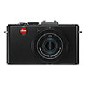

Leica webshop
How many time a day do you wish you had your camera?
Leica v-lux 40
With its super-zoom, video in full-HD quality.
Leica v-lux 3
With its 24x super-erlephoto zoom lens.
Leica-x2
The classically-designed compact Leica X2.
- 
Leica D Lux 5
Leica D Lux 5 is the ideal camera.
Leica D Lux 5 Titanium
The new Leica D Lux 5 Titanium.
Leica special edition
Exclusive special editions for collectors.
M9 & M9-P
A new dimensiton in digital photography.
Leica m MonoChrom
The future of digital black-and-white
M7
The M7 feels instincitvely right.
MP
Photography is as much about the mind.
Leica A La Carte
With use, any Leica.
Leica v-Lux 40
The multi-talented compact camera.
Ready for new perspectives.
Leica v-Lux 40는 사진 마니아 에게 있어 진짜처럼 자연스럽게 그리고 타의 추종을 불허하는 라이카의 굉장한 질로 그 마법을 담아내게 하는 완벽한 장비입니다.
Leica v-Lux 40는 손쉽다.
인체 공학적 설계와 깔끔하게 배치된 컨트롤 버튼은 개인의 손쉬운 사용을 가능케 한다. 또 셔터 스피드와 구경 수동 설정 기능은 더욱 폭 넓은 자유로운 효과를 제공한다.
Leica v-Lux 3
여행자를 탐험가로 만드는 카메라.
여행 및 자연 사진촬영을 위한 수퍼-줌 기능이 있는 소형 카메라인 라이카 V-Lux 2는 모험, 세계 여행가 및 전 세계의 보다 많은 것을 찾기를 원하는 자연을 사랑하는 사람들에게 있어 완벽한 카메라입니다.
자신들의 여정에 승선하는 라이카 탐험가
“라이카 탐험가“ 경쟁에서 승리한 사람들은 완벽한 준비를 갖추는대로 여행을 시작할 것이다. 당사의 블로그에서 그들의 행적을 확인할 수 있으며, 그들이 어떻게 제임스 쿡, 데이빗 리빙스톤, 혹은 퍼디난드 마젤란의 족적을 따라가는지 볼 수 있다
Leica x2
소형 패키지에서 능가할 수 었는 성능.인생 그 자체만큼 즉흥적인.
라이카 X1과 M 시스템의 클래식 모델들 사이의 유사점은 단순한 외관 스타일 이상이다. 특히 이미지 품질과 관련하여 X1는 더 큰 사이즈의 사촌뻘 되는 모델과도 비교를 거부한다. 눈에 띌 정도로로 소형하며 사용이 쉬운 X1은 사진작가들에게 사전에 연습되지 않은 진정한 순간과 느낌을 정확하게 포착해낼 수 있는 유연성을 제공해준다.
이것이 바로 라이카 X1을 요구 많은 사진작가들을 위한 완벽한 일상의 동반자로 만들어 주는 것이다. 예를 들어, 하바나에서 촬형한 패션 사진에 있는 사진작가 보조는 그의 배낭 속에 X1을 가지고 있었다. 신중하고 눈에 띄지 않게 X1은 그로 하여금 뛰어난 이미지를 통해 자연스럽게 새로운 전체적인 이야기를 해주는 사진을 촬영하도록 하였다.
Leica D Lux 5
영감은 창조적인 유연성을 필요로 한다.D-lux 5는 우아한 디자인뿐 아니라 탁월한 품질의 이미지를 얻을 수 있다.
24~90mm(35mm 렌즈와 동일)의 초점 길이를 가진 고속 라이카 Summicron 줌 렌즈를 특징으로 하는 이 다재다능한 소형 카메라는 매크로 및 광각 건축물에서 풍경에 이르는, 보도에서 인물 및 조명을 이용할 수 있는 포토그라피에 이르기까지 넓은 스펙트럼의 촬영 상황에 있어 완벽한 카메라이다. 수동 설정 옵션과 확장된 범위의 악세서리는 더 많은 창조적인 자유를 제공한다. 이와 같은 소형 패키지에서 이와 같은 다재다능한 성능을 가진 D-lux 5는 베를린이나 전 세계 어디에서든 영감을 찾을 때마다 완벽한 동반자가 되어줄 것이다.
Leica D Lux 5 Titanium
Exclusive design for inspiring moments.
정제된 우아함과 무한한 가능성
Leica 렌즈의 광학 성능은 지난 100여년 동안 최고의 찬사를 받아 왔습니다.
D-Lux 5 Titanium Ediction에는 야외와 실내에 관계없이 모든 상황에서 최고의 성능을 낼 수 있도록 설계되어 카메라 매니아들에게 소형카메라 역사에 새로운 척도를 만들어 내었다고 평가되고 있습니다. 광활한 광각찰영에서부터 디테일한 망원 촬영까지 가능해 풍경과 인물까지 정교하고 완벽하게 표현할 수 있습니다.
Leica M9-P edition HERMES
Exclusive limited-edition camear.Craftsmanship of the highest degree
독일, Solms 라이카 카메라 AG는 새로운 한정판: 라이카 M9-P "Hermès 에디션"을 선보인다. 라이카 M9-P "에르메스 에디션"은 엄격한 한정판으로 제공될 것이다. 한정된 수량의, 고유의 제품 디자인과, 특별한 장인정신과 더불어 모든 측면에서 진정한 특별판으로 만든다.
라이카 M9-P "에르메스 에디션"의 압권은, 실버 크롬 버전의 가죽 처리를 위해 에르메스에 의해 공급되는 "Veau Swift" 송아지 가죽이다. 이 지극히 훌륭하고 유연한 가죽은 카메라 바디에 적용되는 것 뿐만 아니라, 패키지에 포함되는 어깨끈에도 사용된다.
전 세계 300대 한정으로 출시되는 각각의 카메라에 고유한 일련번호를 붙여 그 가치를 더할 예정이다.
카메라와 더불어 Leica Summicron-M 28mm F/2 ASPH 렌즈를 기본 구성품에 포함하며 에르메스에서 직접 제작한 전용 카메라 가방이 제공된다. 더불어 장-루이 뒤마가 라이카 M 카메라로 촬영한 190 페이지 분량의 포트폴리오가 구성품에 포함 될 예정. 또한 평생 카메라의 성능과 작동을 보장하는 라이프타임 워런티가 함께 제공된다.
Luxurious leather by Hermès
M9-P “Edition Hermès”의 가격은 25,000달러, The Leica M9-P “Edition Hermès”는 50,000달러에 판매된다.
Leica M9-P edition HERMES
기본 요소에 집중: 최대 이미지 품질디지털 포토그라피에 있어 새로운 벤치마크
35-mm 포토그라피의 역사는 Ur-라이카를 통해 거의 100년전에 시작되었다. 오늘 날, 랜드마크 카메라인 라이카 M9을 통해 라이카 M 카메라의 자랑스러운 유산을 디지털 시대로 전해주고 있다. 라이카 M9은 초고 해상도해서 풀 35-mm 포맷(24 x 36mm)를 완벽하게 포착할 수 있는 M9 전용으로 개발된 울트라 풀-프레임 센서이 CCD 센서가 설치된 같은 크기의 카메라 중 전 세계 첫번째 디지털 시스템 카메라이다. 친근하고, 고전적이며, 세월이 흘러도 변함 없는 M 디자인에서 새로운 M9은 우리 시대의 완벽한 기술을 바탕으로 이전 모델이 가졌던 본질을 표현한다. 이는 이미지 품질에 있어서 가장 높은 기준을 수립하고 오래가는 이미지를 생성하는데 전념하는 사람들을 위하 완벽한 현시대의 도구이다.
Leica M MONOCHROM
The future of monochrome digital photography.
흑백 사진 매니아들에게 Leica M-System은 전설적인 카메라 입니다.꾸준히 발전과 노력으로 전통을 계승하며 마침내 디지털 형태로 본격적인 흑백 사진을 제공할 수 있도록하기 위해 기다려온 시간이었습니다.
Leica M Monochrom
이것은 독점적과 흑백 사진에 대한 타협없이 설계된 최초의 풀 프레임 포맷 디지털 카메라입니다. 그리고 비교할 수없는 선명도와 다이나믹 레인지에서 '진정한' 흑백 이미지를 제공합니다. 이것은 M Monochrom 흑백 사진에 대한 열정이있는 모든 사람을 위한 완벽한 카메라 입니다.
M7
빠른 속도, 사용자 친과성, 신뢰성
포토그라피는 눈만큼 마인드도 중요하다. 라이카 MP의 수동 기능들은 당신의 명령에 따라 정확히 기능한다. 결정하는 것은 당신의 손에 달려있다.
클래식 모델들은 현재의 지나쳐 버리는 기분들에 대한 영향을 받지 않는 작업들이다. 클래식 모델들은 결코 기록되지 않지만, 변화된 세상을 바탕으로 재해석된다. 아날로그 라이카 M7은 이와 같은 클래식 모델이다. 라이카 M을 이용한 실버 할로겐 포토크라피에는 특별한 매력이 있는데, 필름을 노출시키는 이해할 수 있는 과정과 재료의 동일 부분을 화학적으로 처리하는 과정이 피사체와 카메라의 감정적인 관계를 생성한다. 사진촬영 시 집중력, 말 그대로 실제하는 이미지에 대한 날카로운 예상, 그리고 우수한 결과물들이 아날로그 라이카 M 카메라에 관한 논쟁거리이다.
MP
클래식하게 기계적인 카메라
기계적인 완벽함 이외에는 아무것도 없다.
라이카 MP는 최고의 도구이다. 수공예로 만들어졌으며, 사진 예술가들을 위해 만들어졌다. 필수요소들을 전달하도록 설계되었다. 자동화의 방해없이 집중된 포토그라피를 위한 집중된 기술이다. 진정한 사진작가만이 보고, 프레임 작업을 하고, 기록할 수 있는 사진을 만들기 위한 카메라이다. 한 순간의 재미가 아닌 평생을 위한 카메라이다.
항상 준비된 카메라
라이카 MP의 개발은 지난 50년간의 경험이 이루어진 것이다. 이는 레인지파인더/뷰파인더 카메라의 정수이다. 이 카메라를 직접 사용하자마자 지난 50년간의 경험을 느끼게 될 것이다.
Leica C-Lux 3
라이카로 사진을 찍는 또 하나의 멋진 이유
라이카 사진작가들은 항상 감탄스러운 일목에 매료되어 왔다. 뛰어난 디자인의 라이카 C-lux 3은 훨씬 많은 관심을 받게 될 것이다.
다른 어떤 라이카도 이처럼 작고, 슬림하며 우아하지 않았다. 검정색과 흰색이 있으며, 둘 다 고광택 마감처리가 되었다. 또한 이 슬림 라인의 금속 카메라를 만들기 위해 고품질의 재료들만을 사용하였다.
이 울트라 소형 카메라는 확실히 미소 짓게 만드는 카메라이다. 라이카 C-lux 3은 그러한 미소를 포착해내는데 있어 환상적인 작업을 수행하고 있다. 강력한 렌즈, 지능적인 자동 모드, 그리고 간단한 조작은 손쉽게 성공적인 즉흥 사진을 촬영할 수 있게 해준다.